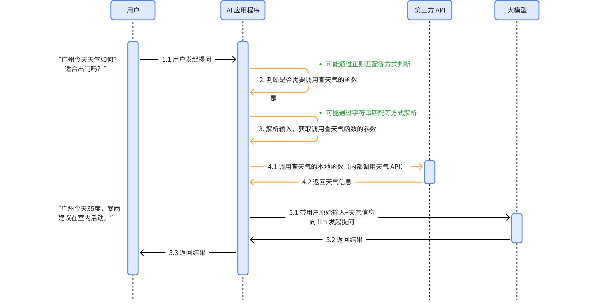
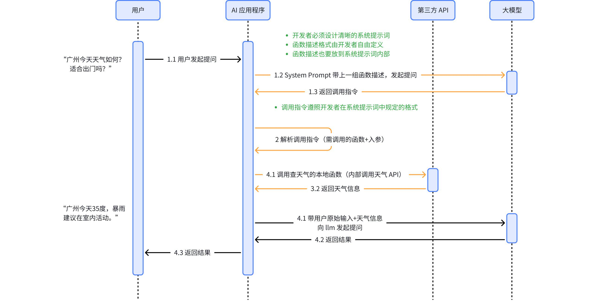

Function Calling 解决了什么问题
正在读取本章记录下次复习：—
请通过“启动学习站.cmd”进入，才能写入数据库。
2.1 纯聊天模型的边界
一个只接收文本并生成文本的模型，本身通常：
- 不知道刚刚发生的天气、库存、邮件或数据库变化；
- 不能直接读取用户文件；
- 不能真正执行代码、发送邮件、修改工单或支付；
- 不能凭空获得私有系统的权限。
它可以说“我已经发出邮件”，但如果应用没有真正调用邮件服务，这句话只是一段文本。
2.2 最早的后端路由方案
在 Function Calling 之前，开发者可以在后端写规则：
- 判断用户请求是否属于天气查询；
- 从自然语言中抽取城市与日期；
- 调用天气 API；
- 把结果拼进 prompt；
- 请求模型生成最终回答。

这种方案不是不可用，而是随着工具数量增加变得复杂：
- 路由规则越来越多；
- 参数抽取需覆盖大量自然语言表达；
- 多工具、多步骤任务难以穷举；
- 每次增加工具都要修改后端逻辑。
2.3 基于提示词的“模拟 Function Calling”
开发者也可以在 system prompt 中列出函数，让模型按约定 JSON 输出：
你可以使用以下函数：
get_weather(city: string)
作用：查询指定城市的天气。
如果需要调用函数，只输出：
{"name": "函数名", "arguments": {...}}
用户询问“广州的天气怎么样”，模型可能输出：
{
"name": "get_weather",
"arguments": {
"city": "广州"
}
}

这一思路证明模型能够参与工具选择和参数生成，但存在明显问题：
- JSON 可能被 Markdown 围栏或解释文字包裹；
- 模型可能编造函数名和参数；
- 参数类型与必填项难以稳定满足；
- 大量工具说明占用上下文；
- 每个开发者都要设计自己的格式与解析器。
2.4 原生 Function Calling
模型供应商把工具描述作为 API 的独立字段，将工具调用作为结构化响应类型返回，并对模型进行专门训练，这就是通常所说的原生 Function Calling 或 Tool Calling。
它将两个容易混淆的职责分开：
| 职责 | 执行者 |
|---|---|
| 判断是否需要工具 | 模型 |
| 选择工具 | 模型 |
| 生成候选参数 | 模型 |
| 验证参数 | 应用 |
| 检查权限 | 应用/工具服务 |
| 执行工具 | 应用/工具服务 |
| 将结果返回模型 | 应用 |
| 根据结果生成回答 | 模型 |
关键纠正：原生 Function Calling 提高了结构稳定性，但不会让模型输出天然可信。名称白名单、JSON Schema 校验、业务校验和授权仍然不可省略。